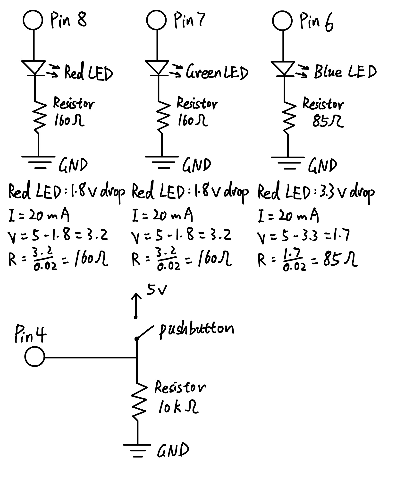
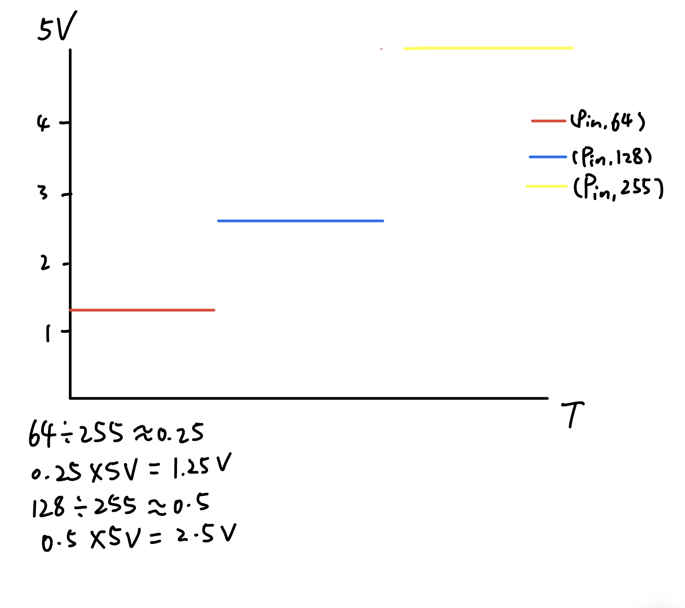

Bo Wang's Assignment 2 Fade!
Schematic:

This is the schematic for my 3 LEDs and 1 button connected to the Arduino, and the calculation for each resistance.
Circuit:

Here is my circuit, as the calculation showed above we can see that the resistance for red and green LED is 160 ohms and for blue LED is 85 ohms, so I picked two 220 ohms resistors, one 100 ohms resistor and one 10k resistor for the button.
Firmware:
const int RED_LED = 8; // the number of the RED LED pin
const int GREEN_LED = 7; // the number of the GREEN LED pin
const int BLUE_LED = 6; // the number of the BLUE LED pin
const int BUTTON_PIN = 4; // the number of the pushbutton pin
int buttonState = 0; // variable for reading the pushbutton status
void setup() {
// initialize the LED pins as the outputs
pinMode(RED_LED, OUTPUT);
pinMode(GREEN_LED, OUTPUT);
pinMode(BLUE_LED, OUTPUT);
// initialize the pushbutton pin as an input
pinMode(BUTTON_PIN, INPUT);
}
void loop() {
// read the state of the pushbutton value
buttonState = digitalRead(BUTTON_PIN);
// check if the pushbutton is pressed. If it is, the buttonState is HIGH:
if (buttonState == HIGH) {
// turn RED and GREEN LED on
digitalWrite(RED_LED, HIGH);
digitalWrite(GREEN_LED, HIGH);
// To fade BLUE LED: Loop through the duty cycle between 1 and 255
for(int i = 0; i < 256; i++){
analogWrite(BLUE_LED, i);
delay(10);
}
} else {
// turn the LEDs off
digitalWrite(RED_LED, LOW);
digitalWrite(GREEN_LED, LOW);
digitalWrite(BLUE_LED, LOW);
}
}
Fade!

This is my final result, after pressing the button red and green LED are lighting and blue LED is fading.
Questions:
Draw a chart where the X axis is time and the Y axis is voltage. Draw 3 lines representing the voltage across an LED with analogWrite(led, 64), analogWrite(led, 128), and analogWrite(led,255).

Given your schematic, circuit, and firmware, assuming the only thing that draws current is your LEDs, how long would your circuit run if powered by a 1200 mAh battery?
The red LED and green LED draws current around 20 + 20 = 40mA. And since the blue LED is fading, the averge current for blue LED can be 10 mA. 1200 mAh / 50mA = 24h. So the circuit would run 24 hours.